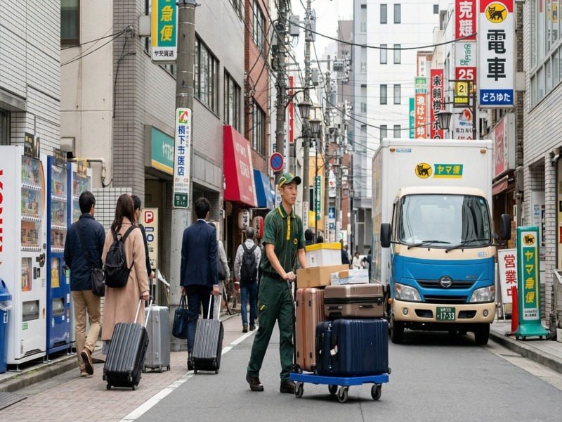

KAIROXについて

KAIROXは「Japan Luggage Freedom」をコンセプトに、訪日外国人旅行者が成田空港到着後すぐに手ぶらで観光できるサービスを提供しています。
コインロッカーは満杯、ヤマト手ぶら観光は翌日着——その隙間を埋めるために、KAIROXは「当日・リアルタイム追跡・多言語」を武器に生まれました。
「着いた日から、全力で遊べ。」という言葉の通り、荷物の心配をゼロにして、日本の旅をより豊かにします。
Company Information
| 会社名 | KAIROX |
|---|---|
| 設立 | 2026年 |
| 代表者 | Daisuke Tsunemori |
| 事業内容 | 訪日外国人向け手ぶら荷物配送サービス |
| 対応エリア | 成田国際空港 第1・第2・第3ターミナル |
| 対応言語 | 日本語・English・中文・한국어 |
| ウェブサイト | https://kairox.jp |
| お問い合わせ | お問い合わせフォーム |
他社との違い
到着当日にホテルまでお届け。翌日着のサービスとは違い、すぐに手ぶら観光を楽しめます。
受け渡し時の証跡写真撮影、リアルタイムGPS追跡で荷物の状況を常に把握できます。
英語・日本語・中国語・韓国語対応。外国人旅行者が安心して使えるサービスを目指します。